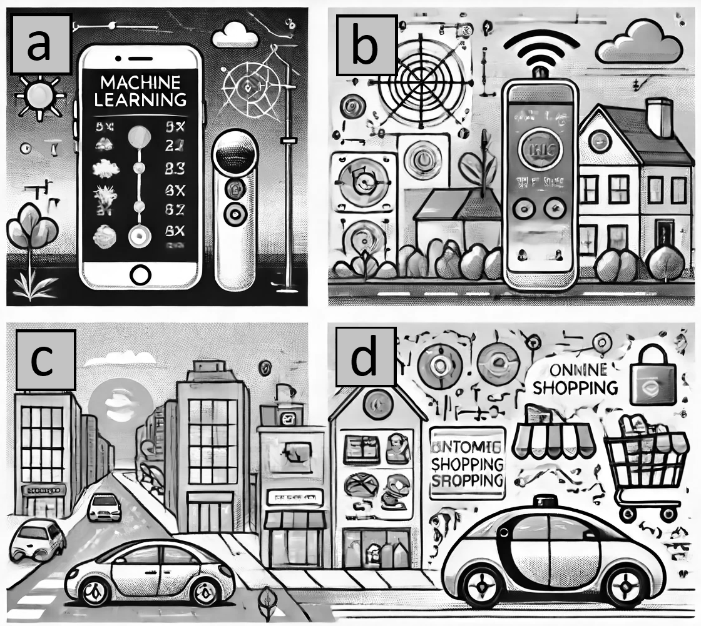

4 Processamento de Linguagem Natural (PLN)
“Os ignorantes afirmam, os sábios duvidam, os sensatos refletem.”
Aristóteles
Objetivo Introduzir técnicas essenciais de PLN, como tokenização, lematização, POS tagging e NER, para capacitar o leitor a processar e analisar linguagem natural em projetos de chatbot; demonstrar o uso de expressões regulares; apresentar métodos de representação de texto, como Bag-of-Words, TF-IDF e embeddings; além disso, descrever como configurar o Python para executar os códigos.
4.1 Inteligência Artificial
A inteligência artificial (IA) é a força tecnológica mais transformadora do século XXI [@ribeiro2025eraIA]. Mas o que é IA? As definições de IA dependem do contexto e isso pode trazer confusão no entendimento e delimitação do tema. Menos abrangente, porém mais confuso ainda, é o termo “inteligência artificial”. Portanto, dado as diversas definições de inteligência artificial (IA), ou artificial inteligence em inglês, delimitaremos um pouco o escopo da inteligência em questão.
A IA aparece em nossa cultura de diversas formas, tais como, o HAL 9000 do filme “2001: uma Odisseia no Espaço”, clássico de Stanley Kubrick, ou como a IA do filme “Ela”, com o ator Joaquin Phoenix, onde um humano se apaixona por um sistema operacional.
Espero que você leitor seja um membro da espécie Homo-Sapiens. O termo “Homo-Sapiens” vem do latim e significa homem sábio [@wikipediahumano]. A importância da sapiência (sinônimo de inteligência) é tamanha que define a nossa espécie. Porém, neste contexto, consideramos que um gato ou cachorro também é dotado de inteligência. Uma abelha é praticamente uma cientista [@wikipediaabelhas]. Portanto, seremos mais contidos e reservados quanto ao significado do termo inteligência.
O que confunde é que inteligência e artificial são palavras que têm significado implícito para pessoas que não são da área de computação. Naturalmente, médicos, advogados, engenheiros (só para citar alguns) querem verificar como a “inteligência artificial” pode ser inserida na sua rotina diária. Meu dentista já quis saber como a IA iria afetar seus procedimentos odontológicos. Porém, ele nunca me perguntou em como a “Transformada de Fourier” poderia melhorar o seu dia-a-dia, mesmo sabendo que a transformada já é utilizada em vários domínios do conhecimento e com entusiasmo [@wikipediafourier].
A inteligência artificial da computação está mais relacionada com a capacidade de realizar coisas que seres inteligentes (tais como um gato, um bebê, uma abelha ou um humano) realizam, como, por exemplo, puxar a mão (ou pata) instantaneamente ao tocar em uma superfície quente, realizar uma prova objetiva de anatomia ou elaborar um recurso para a anulação de uma questão de concurso. Se um programa realiza uma ação geralmente realizada por uma entidade dotada de inteligência, ele pode ser encarado como um programa que simula uma inteligência artificial. Convenhamos que praticamente qualquer coisa cabe neste conceito.
Sobre este tema, o livro de Russell e Norvig (um dos livros mais lidos em todas as universidades do mundo sobre o tema) tem uma boa definição sobre o tema: “O campo da inteligência artificial [...] tenta não apenas compreender, mas também construir entidades inteligentes” (tradução nossa) [@Russel2013]. Em outras palavras, a inteligência artificial da ciência da computação tem o audacioso objetivo de construir agentes dotados de inteligência.
A origem do termo “inteligência artificial”, na ciência da computação, é geralmente atribuída a John McCarthy, professor de Matemática da Universidade Dartmouth College [@blipblog] (Figura [fig:jhonalan]). Ele organizou uma conferência com duração de oito semanas com outros colegas em 1956, alguns anos após a Segunda Guerra, e desde então o termo vem sendo utilizado para designar parte de conteúdos estudados em ciência da computação.
Um pouco antes, o artigo seminal de Alan Turing, com quem John McCarthy trabalhou em conjunto, já apresentava reflexões sobre a inteligência que uma máquina poderia possuir [@Turing1950]. No entanto, a inteligência artificial aparece na literatura há milhares de anos; um exemplo é o Gigante Talos de Creta, um autômato proveniente da mitologia grega [@pickover2021artificial].
Foi na década de 1970 que o uso da inteligência artificial começou a ser mais difundido. Uma das primeiras abordagens com relativo sucesso foi os Sistemas Especialistas (SE). Eles dependiam dos especialistas do domínio para transformar o conhecimento tácito (baseado em sua experiência) em explícito (formalizado, documentado), que era então codificado na forma de regras em lógica formal. O processo de aquisição desse conhecimento acabou sendo um grande obstáculo na adoção em massa dessa abordagem. Veja um exemplo de software que implementa um motor de inferência baseado na teoria dos SE na Figura 3.1.

A superação de algumas limitações (tais como o aumento da capacidade de processamento e armazenamento dos computadores, a geração de grandes volumes de dados, novidades científicas e tecnológicas, chips supercondutores e a eficiência energética) permitiu o avanço de outras técnicas. Uma das técnicas que têm ganho notoriedade, por causa desses avanços, é o Aprendizado de Máquina.
4.2 Aprendizado de Máquina
O Aprendizado de Máquina (AM) é uma subárea da IA motivada pelo desenvolvimento de softwares mais independentes da intervenção humana para extração do conhecimento, o que era uma dificuldade nos Sistemas Especialistas. Geralmente, aplicações de AM utilizam indução para buscar modelos capazes de representar o conhecimento existente nos dados.
Na Figura 3.2, é possível identificar alguns usos de AM integrado em algumas atividades cotidianas. São elas: (a) um smartphone com um assistente de voz fornecendo atualizações meteorológicas; (b) um sistema de casa inteligente ajustando o termostato com base nas preferências do usuário; (c) um carro autônomo dirigindo em uma rua movimentada da cidade; (d) uma plataforma de compras online recomendando produtos a um usuário com base em suas compras anteriores. Essa figura foi criada inclusive com uma inteligência artificial chamada DALL·E 3, disponível no ChatGPT. ChatGPT é um chatbot que ganhou notoriedade, sendo um dos aplicativos que mais ganhou usuários rapidamente no mundo.

As tarefas de aprendizado de máquina podem ser divididas entre tarefas preditivas e descritivas. As tarefas de aprendizado preditivas visam inferir o atributo alvo de uma nova entrada a partir da exposição prévia aos dados durante o treinamento do modelo. As tarefas descritivas buscam extrair padrões e correlações; além disso, não existe esta distinção entre atributos alvo e preditivos.

Ambas as tarefas podem ser categorizadas sob o conceito de aprendizado indutivo, sendo a capacidade de generalizar a partir de exemplos específicos, isto é, do conjunto de dados de treinamento. Em se tratando de tarefas preditivas, os algoritmos poderão implementar tarefas de classificação, nas quais o atributo alvo é qualitativo discreto (ou categórico), ou de regressão, em que o atributo alvo é quantitativo contínuo (ou numérico). Já as tarefas descritivas podem ser: agrupamento, que busca por similaridades, associação, que busca por padrões frequentes, e sumarização, que resulta em um resumo do conjunto de dados. No entanto, outras técnicas de aprendizagem de máquina supervisionadas e não supervisionadas estão fora do escopo deste livro.
4.3 Processamento de Linguagem Natural
O Processamento de Linguagem Natural (PLN) é um campo ligado à inteligência artificial, dedicando-se a equipar computadores com a capacidade de analisar e compreender a linguagem humana. Ele emprega técnicas computacionais com o propósito de aprender, compreender e produzir conteúdo em linguagem humana [@Zhao2020]. Os sistemas de PLN podem suportar diferentes níveis ou combinações de níveis de análise linguística [@Zhao2020]. Os níveis de análise linguística referem-se à análise fonética, morfológica, léxica, sintática, semântica, de discurso e análise pragmática da linguagem; existe uma suposição de que os seres humanos normalmente utilizam todos esses níveis para produzir ou compreender a linguagem [@Zhao2020].
As abordagens de PLN podem ser classificadas em dois grandes grupos: o PLN simbólico e o PLN estatístico [@Zhao2020]. Embora ambos os tipos de PLN tenham sido investigados ao mesmo tempo, foi o PLN simbólico que dominou o campo por algum tempo. Porém, abordagens estatísticas ganharam força principalmente após a divulgação do ChatGPT [@OpenAI2023].
Com o advento das abordagens estatísticas, em vez de depender exclusivamente de regras feitas à mão, os pesquisadores passaram a explorar os métodos estatísticos e probabilísticos alimentados por grandes coleções de textos. Nessa fase, algoritmos de aprendizado de máquina começaram a extrair padrões e regularidades a partir de grandes textos (também chamados de corpora). Essa abordagem empírica demonstrou ser mais robusta para lidar com a variabilidade intrínseca da língua – afinal, o sistema “aprende” com exemplos reais, capturando nuances que seriam difíceis de enumerar manualmente [@rcelebrone2025]. Técnicas estatísticas impulsionaram aplicações como corretores ortográficos, sistemas de tradução automática e assistentes de voz, marcando uma mudança fundamental de estratégia no campo o PLN.
Mas ainda não podemos descartar a abordagem simbólica - também são chamadas de baseadas em regras explícitas. Elas permitem que linguistas e programadores definiam manualmente gramáticas, ontologias e conjuntos de regras linguísticas para que o computador analise e gera frases corretamente. Essas abordagens conseguiram relativos sucessos em domínios restritos – como no ELIZA - mas mostrou-se limitada. Regras rígidas falham diante das inúmeras ambiguidades da linguagem humana, pois expressões fora do previsto escapam ao alcance dessas soluções programadas na íntegra [@rcelebrone2025]. Sistemas puramente baseados em regras eram inflexíveis frente à variação linguística natural, exigindo extensa manutenção manual para cobrir casos novos.
Várias dessas técnicas de PLN são utilizadas em diversos chatbots. Desde o momento em que o usuário envia uma mensagem, o bot aplica PLN para entender a intenção por trás das palavras. Isso envolve identificar o que o usuário deseja ou pergunta, mesmo que haja várias maneiras de expressar a mesma coisa. Por exemplo, um assistente virtual deve reconhecer que perguntas como "Poderia me dizer se vai chover hoje?" e "Qual a previsão do tempo para hoje?" têm a mesma intenção (consulta sobre clima) ainda que usem palavras diferentes. Modelos modernos de compreensão de linguagem conseguem agrupar essas variações e mapear para a intenção correta graças a embeddings e classificadores treinados em múltiplas formulações de consulta [@rcelebrone2025].
Na construção de chatbots, outra função muito utilizada é processar a entrada bruta do usuário, realizando a limpeza e a preparação dos dados textuais para que o sistema possa interpretar a mensagem e tomar as ações subsequentes apropriadas. Geralmente, o processo envolve a decomposição da linguagem em unidades menores, a compreensão do seu significado intrínseco e a determinação da resposta ou ação mais adequada.
Além disso, o PLN ajuda o chatbot a extrair entidades e detalhes relevantes na frase do usuário – como datas, nomes, locais – que permitem contextualizar a solicitação. Esse entendimento refinado reduz drasticamente falhas de comunicação: em vez de responder “Desculpe, não entendi” a cada frase fora do roteiro, o bot passa a lidar bem com sinônimos, gírias e estruturas frasais incomuns, oferecendo respostas pertinentes. Grandes modelos de linguagem já incorporam esse tipo de generalização, o que explica por que assistentes atuais parecem entender até perguntas muito abertas ou indiretas [@rcelebrone2025].
Usando as técnicas de PLN adequadas os chatbots podem gerar respostas cada vez mais humanas. Nas gerações anteriores, muitos bots recorriam a respostas prontas ou scripts pré-definidos, conforme visto no Eliza, resultando em interações engessadas e repetitivas. Hoje, com os modelos de linguagem Grande (que serão discutidos no próximo capítulo), os chatbots podem produzir respostas inéditas, elaboradas em tempo real. Com isso o chatbot pode responder com frases gramaticalmente corretas, coerentes com o contexto da conversa e até ajustadas ao tom apropriado para o usuário.
Portanto, neste capítulo conheceremos algumas das principais técnicas individualmente que não são apenas teorias acadêmicas, com elas temos um canivete suíço de partes que serão usadas de acordo com a necessidade do botmaster (o engenheiro que cria o chatbot algumas vezes é chamado de botmaster, enquanto quem conversa com ele é definido como usuário). Porém antes vamos configurar o Python que será a linguagem de programação utilizada durante todo o capítulo.
4.4 Instalação do Python
Nesta seção, abordaremos como preparar o ambiente necessário para trabalhar com vetorização de texto em Python. Isso inclui a instalação do Python e das bibliotecas necessárias, além de uma breve introdução ao uso do Jupyter Notebook.
NOTA SOBRE REPRODUÇÃO DOS CÓDIGOS
Todos os exemplos de código deste livro foram testados em Python na versão 3.12 na IDE Visual Studio Code em um PC com GPU. Alguns poucos códigos quando especificados foram executados no google Colab. No quadro abaixo do código-fonte é apresentado a saída do console.
Para começar a trabalhar com vetorização de texto, é essencial ter o Python instalado. Python é uma linguagem de programação amplamente utilizada para análise de dados e aprendizado de máquina devido à sua simplicidade e à vasta gama de bibliotecas disponíveis.
Para instalar o Python, siga as instruções abaixo:
No Windows, baixe o instalador do site oficial do Python (https://www.python.org/) e siga as instruções do instalador.
No macOS, você pode usar o
Homebrewpara instalar o Python executando o comandobrew install python.No Linux, o Python geralmente já está instalado, mas você pode atualizá-lo usando o gerenciador de pacotes da sua distribuição.
Uma vez que o Python esteja instalado, precisamos instalar algumas bibliotecas que são fundamentais para a vetorização de texto. Entre as principais estão “NumPy”, “Pandas”, “Scikit-learn”, “NLTK” e “SpaCy” e “Gensim”.
O “SpaCy” é uma biblioteca de PLN de código aberto em Python, conhecida por sua velocidade e eficiência. O spaCy oferece APIs intuitivas e modelos pré-treinados para diversas tarefas de PLN, incluindo tokenização, POS tagging, lematização, NER e análise de dependências. Sua arquitetura é focada em desempenho para aplicações em produção.
O “NLTK” (Natural Language Toolkit) é uma biblioteca Python fundamental para PLN, oferecendo uma ampla gama de ferramentas e recursos para tarefas como tokenização, stemming, POS tagging, análise sintática e NER. O NLTK é frequentemente utilizado para fins educacionais e de pesquisa.
O “Gensim” é uma biblioteca Python especializada em modelagem de tópicos, análise de similaridade semântica e vetores de palavras. Ele é particularmente útil para identificar estruturas semânticas em grandes coleções de texto.
O “pip” é o gerenciador de pacotes padrão do Python. Você pode instalar as bibliotecas necessárias usando o seguinte comando:
pip install numpy pandas scikit-learn nltk spacy gensimApós instalar as bibliotecas, é importante verificar se elas foram instaladas corretamente:
import numpy as np
import pandas as pd
import sklearn
import nltk
import spacy
import gensim
print("NumPy version:", np.__version__)
print("Pandas version:", pd.__version__)
print("Scikit-learn version:", sklearn.__version__)
print("NLTK version:", nltk.__version__)
print("SpaCy version:", spacy.__version__)
print("Gensim:", gensim.__version__)NumPy version: 1.26.4
Pandas version: 2.2.2
Scikit-learn version: 1.5.1
NLTK version: 3.9.1
SpaCy version: 3.7.6Este código importará as bibliotecas e exibirá suas versões, garantindo que todas estejam corretamente instaladas.
O Jupyter Notebook é uma ferramenta poderosa para o desenvolvimento de scripts em Python, permitindo a combinação de código, texto, visualizações e resultados em um único documento.
Você pode instalar o Jupyter Notebook usando o pip:
pip install jupyterlabPara iniciar o Jupyter Notebook, execute o seguinte comando no terminal:
jupyter notebookIsso abrirá o Jupyter Notebook no seu navegador padrão, permitindo que você comece a escrever e executar código Python de maneira interativa.
Um exemplo simples de uso do Jupyter Notebook seria a criação de uma célula de código para calcular a soma de dois números:
a = 10
b = 20
print("a soma é:", a + b) a soma é: 30Este exemplo demonstra a simplicidade e interatividade que o Jupyter Notebook oferece, permitindo que você execute código Python célula por célula e veja os resultados imediatamente. Em resumo, configuramos o ambiente necessário para trabalhar com Python e as principais bibliotecas instaladas, além da configuração do Jupyter Notebook.
4.5 Principais Técnicas de PLN
4.5.1 Tokenização
Tokenização é o processo de dividir um texto em unidades menores chamadas “tokens” que podem ser palavras, frases ou até mesmo sentenças [@jurafskyspeech]. A tokenização é o primeiro passo em muitos algoritmos de PLN, pois permite que os dados textuais sejam manipulados de forma programática.
Tokenizar não é só separar por espaços, mas também lidar com pontuações, contrações e outros aspectos que podem afetar a análise. Um exemplo simples seria a frase “Eu estou feliz.”, que seria tokenizada em [“Eu”, “estou”, “feliz”, “.”]. Não necessariamente uma palavra equivale a um token. Em alguns casos, como em palavras compostas ou expressões idiomáticas, um único token pode representar uma ideia ou conceito mais amplo. Por exemplo, “São Paulo” poderia ser considerado um único token em vez de dois (“São” e “Paulo”).
Existem diferentes abordagens para tokenização, incluindo tokenização baseada em regras, onde padrões específicos são definidos para identificar tokens (geralmente utilizando expressões regulares), e tokenização baseada em aprendizado de máquina, onde algoritmos aprendem a segmentar o texto com base em exemplos anteriores.
A tokenização pode ser feita de várias maneiras, dependendo do idioma e do objetivo da análise. Em inglês, por exemplo, a tokenização pode ser mais simples devido à estrutura gramatical, enquanto em idiomas como o chinês, onde não há espaços entre as palavras, a tokenização pode ser mais complexa.
A seguir, um exemplo do uso da biblioteca nltk e a tokenização de determinado texto, também chamado de corpus.
# pip install nltk
import nltk
from nltk.tokenize import word_tokenize, sent_tokenize
# Exemplo de texto
texto = "Chatbots estão se tornando cada vez mais populares. Eles podem realizar muitas tarefas automaticamente."
# Tokenização em palavras
tokens_palavras = word_tokenize(texto)
print("Tokens de palavras:", tokens_palavras)
# Tokenização em sentenças
tokens_sentencas = sent_tokenize(texto)
print("Tokens de sentenças:", tokens_sentencas)Tokens de palavras: ['Chatbots', 'estão', 'se', 'tornando', 'cada', 'vez', 'mais', 'populares', '.', 'Eles', 'podem', 'realizar', 'muitas', 'tarefas', 'automaticamente', '.']
Tokens de sentenças: ['Chatbots estão se tornando cada vez mais populares.', 'Eles podem realizar muitas tarefas automaticamente.']SpaCy é uma biblioteca para PLN que oferece uma interface fácil de usar e é otimizada para processamento rápido. É possível também utilizar a biblioteca “spacy”, conforme os códigos a seguir:
# pip install spacy
# import os
# os.system("python -m spacy download pt_core_news_sm")
import spacy
# Carregar o modelo de linguagem em português
nlp = spacy.load("pt_core_news_sm")
# Exemplo de texto
texto = "Chatbots estão se tornando cada vez mais populares."
# Processando o texto
doc = nlp(texto)
# Tokenização
tokens = [token.text for token in doc]
print("Tokens:", tokens)Tokens: ['Chatbots', 'estão', 'se', 'tornando', 'cada', 'vez', 'mais', 'populares', '.']4.5.2 Lematização
Lematização é o processo de reduzir palavras flexionadas ao seu lema, ou forma base [@singh2019building]. Diferente da stemização, a lematização leva em consideração o contexto e a gramática da palavra para obter a forma correta.
# pip install nltk
# import nltk
# nltk.download('wordnet')
import nltk
from nltk.stem import WordNetLemmatizer
# Inicializando o lematizador
lemmatizer = WordNetLemmatizer()
# Exemplo de palavras
palavras = ["correndo", "correu", "corredores"]
# Lematização das palavras
lematizadas = [lemmatizer.lemmatize(palavra, pos='v') for palavra in palavras]
print("Palavras lematizadas:", lematizadas)Palavras lematizadas: ['correndo', 'correu', 'corredores']Com spacy
#pip install spacy
import spacy
# Carregar o modelo de linguagem em português
nlp = spacy.load("pt_core_news_sm")
# Exemplo de texto
texto = "Chatbots estão se tornando cada vez mais populares."
# Processando o texto
doc = nlp(texto)
tokens = [token.text for token in doc]
print("Tokens:", tokens)
lematizadas = [token.lemma_ for token in doc]
print("Palavras lematizadas:", lematizadas)Tokens: ['Chatbots', 'estão', 'se', 'tornando', 'cada', 'vez', 'mais', 'populares', '.']
Palavras lematizadas: ['chatbots', 'estar', 'se', 'tornar', 'cada', 'vez', 'mais', 'popular', '.']4.5.3 Stemização
A stemização é o processo de reduzir as palavras às suas raízes ou “stems”. É uma técnica mais simples que a lematização e, geralmente, não considera o contexto, o que pode levar a resultados menos precisos.
# pip install nltk
from nltk.stem import PorterStemmer
# Inicializando o stemizador
stemmer = PorterStemmer()
# Exemplo de palavras
palavras = ["correndo", "correu", "corredores"]
# Stemização das palavras
stems = [stemmer.stem(palavra) for palavra in palavras]
print("Stems das palavras:", stems)Stems das palavras: ['correndo', 'correu', 'corredor']4.5.4 Stopwords
Stopwords são palavras comuns em um idioma (como “o”, “a”, “e”, “de”, “que”, etc.) que geralmente são removidas durante o pré-processamento de texto, pois não contribuem significativamente para o significado do texto [@Raj2019]. A remoção dessas palavras pode melhorar a eficácia de certos algoritmos de PLN, focando nas palavras mais informativas do texto.
# pip install nltk
# import nltk
# nltk.download('stopwords')
from nltk import word_tokenize
from nltk.corpus import stopwords
# Carregar stopwords para o idioma portugues
stop_words = set(stopwords.words('portuguese'))
# Exemplo de texto
texto = "Chatbots estão se tornando cada vez mais populares."
# Removendo stopwords
tokens_sem_stopwords = [palavra for palavra in word_tokenize(texto) if palavra.lower() not in stop_words]
print("Texto sem stopwords:", tokens_sem_stopwords)Texto sem stopwords: ['Chatbots', 'tornando', 'cada', 'vez', 'populares', '.']Com a biblioteca Spacy:
# pip install spacy
# python -m spacy download pt_core_news_sm
import spacy
# Carregar o modelo de linguagem em português
nlp = spacy.load("pt_core_news_sm")
# Exemplo de texto
texto = "Chatbots estão se tornando cada vez mais populares."
# Processando o texto
doc = nlp(texto)
tokens = [token.text for token in doc]
print("Tokens:", tokens)
# Removendo stopwords
tokens_sem_stopwords = [token.text for token in doc if not token.is_stop]
print("Texto sem stopwords:", tokens_sem_stopwords)Tokens: ['Chatbots', 'estão', 'se', 'tornando', 'cada', 'vez', 'mais', 'populares', '.']
Texto sem stopwords: ['Chatbots', 'tornando', 'populares', '.']4.6 Outras técnicas de PLN
Marcação Morfossintática (POS Tagging): Esta técnica consiste em atribuir a cada token em um texto uma categoria gramatical, como substantivo, verbo, adjetivo, advérbio, etc. A marcação POS é utilizada para identificar entidades e compreender a estrutura gramatical das frases. Por exemplo, na frase “Eu estou aprendendo como construir chatbots”, a marcação POS poderia identificar “Eu” como um pronome (PRON), “estou aprendendo” como um verbo (VERB) e “chatbots” como um substantivo (NOUN).
Reconhecimento de Entidades Nomeadas (NER): O NER é a tarefa de identificar e classificar entidades nomeadas em um texto, como nomes de pessoas (PERSON), organizações (ORG), localizações geográficas (GPE, LOC), datas (DATE), valores monetários (MONEY), etc. Por exemplo, na frase “Google tem sua sede em Mountain View, Califórnia, com uma receita de 109,65 bilhões de dólares americanos”, o NER identificaria “Google” como uma organização (ORG), “Mountain View” e “Califórnia” como localizações geográficas (GPE) e “109,65 bilhões de dólares americanos” como um valor monetário (MONEY). Essa capacidade é vital para que chatbots compreendam os detalhes relevantes nas utterances dos usuários.
Análise de Dependências (Dependency Parsing): Esta técnica examina as relações gramaticais entre as palavras em uma frase, revelando a estrutura sintática e as dependências entre os tokens. A análise de dependências pode ajudar a entender quem está fazendo o quê a quem. Por exemplo, na frase “Reserve um voo de Corumbá para Maceió”, a análise de dependências pode identificar “Corumbá” e “Maceió” como modificadores de “voo” através das preposições “de” e “para”, respectivamente, e “Reserve” como a raiz da ação. Essa análise é útil para extrair informações sobre as intenções do usuário, mesmo em frases mais complexas.
Classificação de Texto: Uma técnica de aprendizado de máquina que atribui um texto a uma ou mais categorias predefinidas. No contexto de chatbots, a classificação de texto é fundamental para a detecção de intenção (mais sobre detecção de intenção será apresentada nas seções seguintes), onde as categorias representam as diferentes intenções do usuário. Algoritmos como o Naïve Bayes são modelos estatísticos populares para essa tarefa, baseados no teorema de Bayes e em fortes suposições de independência entre as características. O treinamento desses classificadores requer um corpus de dados rotulados, onde cada utterance (entrada do usuário) é associada a uma intenção específica.
4.7 Expressões Regulares
Expressões regulares, frequentemente abreviadas como regex, são sequências de caracteres que definem padrões de busca. Elas são utilizadas em chatbots para diversas tarefas relacionadas ao processamento e à análise de texto fornecido pelos usuários.
Frameworks populares para desenvolvimento de chatbots frequentemente integram o uso de expressões regulares para aprimorar a extração de entidades. Por exemplo, as regex podem ser definidas nos dados de treinamento para ajudar o sistema a reconhecer padrões específicos como nomes de ruas ou códigos de produtos. Essa abordagem permite melhorar a precisão do reconhecimento de entidades, um componente importante para a compreensão da intenção do usuário.
A sintaxe das expressões regulares consiste em uma combinação de caracteres literais (que correspondem a si mesmos) e metacaracteres, que possuem significados especiais e permitem definir padrões de busca mais complexos. As expressões regulares podem ser aplicadas em uma variedade de cenários no desenvolvimento de chatbots. Algumas das aplicações de regex nos chatbots incluem:
Extração de entidades: Identificação e extração de informações específicas, como endereços de e-mail, números de telefone, datas e outros dados estruturados presentes na entrada do usuário.
Validação de entradas do usuário: Verificação se a entrada do usuário corresponde a um formato esperado, como datas em um formato específico (DD/MM/AAAA), códigos postais ou outros padrões predefinidos.
Detecção de Intenção: Detecção de comandos específicos inseridos pelo usuário, como
/ajuda,/iniciarou palavras-chave que indicam uma intenção específica.Limpeza de texto: Remoção de ruídos e elementos indesejados do texto, como tags HTML, espaços em branco excessivos ou caracteres especiais que podem interferir no processamento subsequente.
Tokenização simples: Embora métodos mais avançados sejam comuns em PLN, regex pode ser usada para dividir o texto em unidades menores (tokens) com base em padrões simples.
Essas tarefas são fundamentais para garantir que o chatbot possa interpretar e responder adequadamente às entradas dos usuários, especialmente em cenários onde a informação precisa ser estruturada ou verificada antes de ser processada por modelos de linguagem mais complexos. Cada uma destas tarefas será detalhada neste Capítulo.
O módulo re em Python é a biblioteca padrão para trabalhar com expressões regulares. Ele fornece diversas funções que permitem realizar operações de busca, correspondência e substituição em strings com base em padrões definidos por regex. Algumas das funções mais utilizadas incluem:
re.match(pattern, string): Tenta encontrar uma correspondência do padrão no início da string. Se uma correspondência for encontrada, retorna um objeto de correspondência; caso contrário, retornaNone.re.search(pattern, string): Procura a primeira ocorrência do padrão em qualquer posição da string. Retorna um objeto de correspondência se encontrado, ouNonecaso contrário.re.findall(pattern, string): Encontra todas as ocorrências não sobrepostas do padrão na string e as retorna como uma lista de strings.re.sub(pattern, repl, string): Substitui todas as ocorrências do padrão na string pela string de substituiçãorepl. Retorna a nova string resultante.
Extração de E-mails
Um caso de uso comum em chatbots é a extração de endereços de e-mail do texto fornecido pelo usuário. O seguinte exemplo em Python demonstra como usar re.findall para realizar essa tarefa. Ilustrando o uso regex para identificar e extrair informações específicas de um texto.
import re
texto = "Entre em contato em exemplo@email.com ou suporte@outroemail.com."
padrao = r'\b[A-Za-z0-9._%+-]+@[A-Za-z0-9.-] +\.[A-Z|a-z]{2,}\b'
emails = re.findall(padrao, texto)
print(emails)['exemplo@email.com', 'suporte@outroemail.com']Validação de Datas
Chatbots que lidam com agendamentos ou reservas frequentemente precisam validar se a data fornecida pelo usuário está em um formato correto. O seguinte exemplo demonstra como validar datas no formato DD/MM/AAAA:
import re
padrao_data = r'\b\d{2}/\d{2}/\d{4}\b'
datas_teste = ["31/12/2020", "1/1/2021", "2023-05-10", "25/06/2025 10:00"]
for data in datas_teste:
if re.match(padrao_data, data):
print(f"'{data}' é uma data válida no formato DD/MM/AAAA.")
else:
print(f"'{data}' não é uma data válida no formato DD/MM/AAAA.")A saída deste código ilustra quais das strings de teste correspondem ao padrão de data especificado.
'31/12/2020' é uma data válida no formato DD/MM/AAAA.
'1/1/2021' não é uma data válida no formato DD/MM/AAAA.
'2023-05-10' não é uma data válida no formato DD/MM/AAAA.
'25/06/2025 10:00' é uma data válida no formato DD/MM/AAAA.Análise de Comandos
Em interfaces de chatbot baseadas em texto, os usuários podem interagir através de comandos específicos, como /ajuda ou /iniciar. As regex podem ser usadas para detectar esses comandos de forma eficiente. Este exemplo abaixo mostra como identificar strings que começam com uma barra seguida por um ou mais caracteres alfanuméricos.
import re
padrao_comando = r'^/\w+'
comandos_teste = ["/ajuda", "/iniciar", "ajuda", "iniciar/"]
for comando in comandos_teste:
if re.match(padrao_comando, comando):
print(f"'{comando}' é um comando válido.")
else:
print(f"'{comando}' não é um comando válido.")'/ajuda' é um comando válido.
'/iniciar' é um comando válido.
'ajuda' não é um comando válido.
'iniciar/' não é um comando válido.Tokenização Simples
Embora para tarefas complexas de PLN sejam utilizadas técnicas de tokenização mais avançadas, as regex podem ser úteis para realizar uma tokenização básica, dividindo o texto em palavras ou unidades menores com base em padrões de separação. A saída será uma lista de strings, onde o padrão \W+ corresponde a um ou mais caracteres não alfanuméricos, utilizados como delimitadores.
import re
texto = "Olá, como vai você?"
tokens = re.split(r'\W+', texto)
print(tokens)['Olá', 'como', 'vai', 'você', '']Limpeza de Texto
Chatbots podem precisar processar texto que contém elementos indesejados, como tags HTML. As regex podem ser usadas para remover esses elementos:
import re
texto_html = "<p>Este é um parágrafo com <b>texto em negrito</b>.</p>"
texto_limpo = re.sub(r'<[^>]+>', '', texto_html)
print(texto_limpo)Este é um parágrafo com texto em negrito.Embora os fundamentos das regex sejam suficientes para muitas tarefas, existem construções mais avançadas que podem ser úteis em cenários complexos. Alguns exemplos incluem Lookaheads e Lookbehinds que permitem verificar se um padrão é seguido ou precedido por outro padrão, sem incluir esse outro padrão na correspondência; além disso, correspondência não-gulosa: que ao usar quantificadores como * ou +, a correspondência padrão é "gulosa", ou seja, tenta corresponder à maior string possível. Adicionar um ? após o quantificador (*?, +?) torna a correspondência "não-gulosa", correspondendo à menor string possível.
É importante reconhecer que, apesar de sua utilidade, as expressões regulares têm limitações significativas quando se trata de compreender a complexidade da linguagem natural. As regex são baseadas em padrões estáticos e não possuem a capacidade de entender o contexto, a semântica ou as nuances da linguagem humana.
No contexto de um fluxo de trabalho de chatbot, as expressões regulares são frequentemente mais eficazes nas etapas de pré-processamento, como limpeza e validação de entradas, enquanto técnicas de PLN mais sofisticadas são empregadas para a compreensão da linguagem em um nível mais alto.
Porém, para tarefas que exigem uma compreensão mais profunda do significado e da intenção por trás das palavras, técnicas avançadas de Processamento de Linguagem Natural (PLN), como modelagem de linguagem, análise de sentimentos e reconhecimento de entidades nomeadas (NER) baseadas em aprendizado de máquina, são indispensáveis e serão apresentadas no Capítulo 4.
4.8 Entendimento de Linguagem Natural
O Entendimento de Linguagem Natural (ULN) é um subdomínio específico dentro do universo mais vasto do PLN. Enquanto o PLN abarca um conjunto diversificado de operações sobre a linguagem, o ULN se concentra de maneira particular na habilidade da máquina de aprender e interpretar a linguagem natural tal como ela é comunicada pelos seres humanos. Em outras palavras, o ULN é o ramo do PLN dedicado à extração de significado e à identificação da intenção por trás do texto inserido pelo usuário. As aplicações do ULN são extensas e incluem funcionalidades cruciais para chatbots, como a capacidade de responder a perguntas, realizar buscas em linguagem natural, identificar relações entre entidades, analisar o sentimento expresso no texto, sumarizar informações textuais e auxiliar em processos de descoberta legal.
No cerne da funcionalidade de um chatbot reside a sua capacidade de compreender as mensagens dos usuários e responder de forma adequada. O PLN desempenha um papel central nesse processo, permitindo que o chatbot: (i) detecte a intenção do usuário; (ii) extraia entidades relevantes; e (iii) processe linguagem variada e informal; e (iv) mantenha o contexto da conversa.
(i) Detecção da Intenção do Usuário: O objetivo por trás da mensagem do usuário é o primeiro passo. Isso é frequentemente abordado como um problema de classificação de texto, onde o chatbot tenta classificar a utterance do usuário em uma das intenções predefinidas. Para detecção da intenção, é possível utilizar técnicas de aprendizado de máquina, como o algoritmo Naïve Bayes, para construir esses classificadores. Plataformas como Rasa NLU (https://rasa.com/), LUIS.ai (https://www.luis.ai/) e Dialogflow (https://dialogflow.cloud.google.com/) simplificam significativamente o processo de treinamento e implantação desses modelos de intenção.
O Rasa NLU é um componente de código aberto do framework Rasa para construir chatbots, focado em entendimento de linguagem natural. Ele permite treinar modelos personalizados para classificação de intenção e extração de entidades, oferecendo flexibilidade e controle sobre os dados.
(ii) Extraia Entidades Relevantes: Além da intenção geral, as mensagens dos usuários frequentemente contêm detalhes específicos, conhecidos como entidades, que são essenciais para atender à solicitação. Por exemplo, em “Reserve um voo de Corumbá para Maceió amanhã”, a intenção é reservar um voo, e as entidades são a cidade de origem (“Corumbá”), a cidade de destino (“Maceió”) e a data (“amanhã”). As técnicas de NER e os modelos de extração de entidades fornecidos por ferramentas como spaCy, NLTK, CoreNLP, LUIS.ai e Rasa NLU são fundamentais para identificar e extrair essas informações.
O CoreNLP é um conjunto de ferramentas de PLN robusto e amplamente utilizado, desenvolvido em Java. O CoreNLP oferece capacidades abrangentes de análise linguística, incluindo POS tagging, análise de dependências, NER e análise de sentimentos. Possui APIs para integração com diversas linguagens de programação, incluindo Python.
(iii) Processe Linguagem Variada e Informal: Os usuários podem se comunicar com chatbots usando uma ampla gama de vocabulário, gramática e estilo, incluindo erros de digitação, abreviações e linguagem informal. As técnicas de PLN, como stemming, lematização e busca por similaridade, ajudam o chatbot a lidar com essa variabilidade e a compreender a essência da mensagem, mesmo que não seja expressa de forma perfeitamente gramatical.
A arquitetura típica de um chatbot envolve uma camada de processamento de linguagem natural (NLP/NLU engine) que recebe a entrada de texto do usuário. Essa camada é responsável por realizar as tarefas de PLN mencionadas anteriormente: tokenização, análise morfossintática, extração de entidades, detecção de intenção, etc. O resultado desse processamento é uma representação estruturada da mensagem do usuário, que pode ser entendida pela lógica de negócios do chatbot.
Com base nessa representação estruturada, um motor de decisão (decision engine) no chatbot pode então corresponder à intenção do usuário a fluxos de trabalho preconfigurados ou a regras de negócio específicas. Em alguns casos, a geração de linguagem natural (NLG), outro subcampo do PLN, é utilizada para formular a resposta do chatbot ao usuário.
4.8.1 Intents
Os Intents representam a intenção ou o propósito por trás da mensagem de um usuário ao interagir com o chatbot [@Khan2018]. Em termos mais simples, é o que o usuário deseja que o chatbot faça ou sobre o que ele quer saber.
Um intent é usado para identificar programaticamente a intenção da pessoa que está usando o chatbot. O chatbot deve ser capaz de executar alguma ação com base no “intent” que detecta na mensagem do usuário. Cada tarefa que o chatbot deve realizar define um intent. A aplicação prática dos intents varia conforme o domínio do chatbot, veja o exemplo:
Por exemplo, para um chatbot de uma loja de moda, exemplos de intents seriam “busca de um produto” (quando um usuário quer ver produtos) e “endereço loja” (quando um usuário pergunta sobre lojas); em um chatbot para pedir comida, “consultar preços” e “realizar pedido” podem ser intents distintos.
Detectar o intent da mensagem do usuário é um problema conhecido de aprendizado de máquina, realizado por meio de uma técnica chamada classificação de texto. O objetivo é classificar frases em múltiplas classes (os intents). O modelo de aprendizado de máquina é treinado com um conjunto de dados que contém exemplos de mensagens e seus intents correspondentes. Após o treinamento, o modelo pode prever o intent de novas mensagens que não foram vistas antes.
4.8.2 Utterances
Cada intent pode ser expresso de várias maneiras pelo usuário. Essas diferentes formas são chamadas de utterances ou expressões do usuário.
Por exemplo, para o intent realizar pedido, as utterances poderiam ser “Eu gostaria de fazer um pedido”, “Quero pedir comida”, “Como faço para pedir?”, etc. Cada uma dessas expressões representa a mesma intenção, mas com palavras diferentes. O modelo de aprendizado de máquina deve ser capaz de reconhecer todas essas variações como pertencentes ao mesmo intent.
É sugerido fornecer um número ótimo de utterances variadas por intent para garantir um bom treinamento do modelo de reconhecimento.
4.8.3 Entities
As entidades extraídas permitem ao chatbot refinar sua resposta ou ação. Os Intents frequentemente contêm metadados importantes chamados Entities. Estas são palavras-chave ou frases dentro da utterance do usuário que ajudam o chatbot a identificar detalhes específicos sobre o pedido, permitindo fornecer informações mais direcionadas. Por exemplo, na frase “Eu quero pedir uma pizza de calabreza com borda recheada”, as entidades podem incluir: Para o intent realizar pedido e para as Entities: pizza, calabreza e borda recheada.
4.8.4 Desafios
O processo de treinamento envolve a construção de um modelo de aprendizado de máquina. Este modelo aprende a partir do conjunto definido de intents, suas utterances associadas e as entidades anotadas. O objetivo do treinamento é capacitar o modelo a categorizar corretamente novas utterances (que não foram vistas durante o treinamento) no intent apropriado e a extrair as entidades relevantes.
Quando o chatbot processa uma nova mensagem do usuário, o modelo de reconhecimento de intent não apenas classifica a mensagem em um dos intents definidos, mas também fornece uma pontuação de confiança (geralmente entre 0 e 1). Essa pontuação indica o quão seguro o modelo está e que a classificação está correta. É comum definir um limite (threshold) de confiança. Se a pontuação do intent detectado estiver abaixo desse limite, o chatbot pode pedir esclarecimentos ao usuário em vez de executar uma ação baseada em uma suposição incerta.
Uma vez que um intent é detectado com confiança suficiente, o chatbot pode executar a ação correspondente. Isso pode envolver consultar um banco de dados, chamar uma API externa, fornecer uma resposta estática ou iniciar um fluxo de diálogo mais complexo. Além disso, a análise dos intents mais frequentemente capturados fornece insights valiosos sobre como os usuários estão interagindo com o chatbot e quais são suas principais necessidades. Essas análises são importantes tanto para a otimização do bot quanto para as decisões de negócio.
Apesar destes procedimentos, alguns problemas ainda desafiam os pesquisadores, tais como a Geração de texto coerente; a Sintaxe e gramática; a semântica; o Contexto; e a Ambiguidade.
A geração de texto coerente é um desafio porque envolve não apenas a escolha de palavras, mas também a construção de frases que façam sentido no contexto da conversa. A sintaxe e gramática são importantes para garantir que o texto gerado seja gramaticalmente correto e compreensível. A semântica se refere ao significado das palavras e frases, e é importante para garantir que o texto gerado transmita a mensagem correta. O contexto é importante para entender o que foi dito anteriormente na conversa e como isso afeta a resposta atual. A ambiguidade pode surgir quando uma palavra ou frase tem múltiplos significados, tornando difícil para o modelo determinar qual interpretação é a correta.
4.9 Vetorização e Representação de Texto
A vetorização de texto é um passo importante no Processamento de Linguagem Natural (PLN), pois permite transformar dados textuais em uma forma que os modelos de aprendizado de máquina podem entender e processar. Nesta seção, exploraremos algumas técnicas de vetorização, incluindo One-Hot Encoding, Bag of Words e TF-IDF (Term Frequency-Inverse Document Frequency), juntamente com implementações práticas em Python.
4.9.1 One-Hot Encoding
One-Hot Encoding é uma das formas mais simples de vetorização de texto, onde cada palavra em um vocabulário é representada como um vetor binário. Cada posição no vetor corresponde a uma palavra do vocabulário, e apenas a posição da palavra que está sendo representada tem valor 1, enquanto todas as outras têm valor 0.
# pip install scikit-learn
from sklearn.preprocessing import OneHotEncoder
import numpy as np
# Exemplo de texto
corpus = ["Eu amo programação", "A programação é divertida"]
# Tokenização simples
tokenized_corpus = [sentence.split() for sentence in corpus]
# Flatten para obter todas as palavras
all_words = [word for sentence in tokenized_corpus for word in sentence]
# Remover duplicatas
vocab = list(set(all_words))
# Criar matriz de índices das palavras para cada frase
word_to_idx = {word: idx for idx, word in enumerate(vocab)}
corpus_idx = [[word_to_idx[word] for word in sentence] for sentence in tokenized_corpus]
# Ajustar o encoder para o vocabulário
encoder = OneHotEncoder(sparse_output=False)
one_hot_encoded = encoder.fit_transform(
np.array(vocab).reshape(-1, 1))
print("Vocabulário:", vocab)
print("One-Hot Encoding:\n", one_hot_encoded)Vocabulário: ['amo', 'é', 'programação', 'Eu', 'A', 'divertida']
One-Hot Encoding:
[[0. 0. 1. 0. 0. 0.]
[0. 0. 0. 0. 0. 1.]
[0. 0. 0. 0. 1. 0.]
[0. 1. 0. 0. 0. 0.]
[1. 0. 0. 0. 0. 0.]
[0. 0. 0. 1. 0. 0.]]Embora seja fácil de entender e implementar, o One-Hot Encoding não leva em consideração a semântica das palavras, resultando em vetores muito esparsos e de alta dimensionalidade, especialmente para vocabulários grandes.
4.9.2 Bag of Words (BoW)
A técnica de Bag of Words (BoW) é uma melhoria em relação ao One-Hot Encoding. Aqui, em vez de vetores binários, usamos contagens de palavras. Para cada documento, construímos um vetor com a frequência de cada palavra no vocabulário.
# pip install scikit-learn
from sklearn.feature_extraction.text import CountVectorizer
# Exemplo de corpus
corpus = ["Eu amo programação", "A programação é divertida", "Eu amo a vida"]
# Criação do vetor de contagem (Bag of Words)
vectorizer = CountVectorizer()
bow_matrix = vectorizer.fit_transform(corpus)
print("Vocabulário:", vectorizer.get_feature_names_out())
print("Bag of Words Matrix:\n", bow_matrix.toarray())Vocabulário: ['amo' 'divertida' 'eu' 'programação' 'vida']
Bag of Words Matrix:
[[1 0 1 1 0]
[0 1 0 1 0]
[1 0 1 0 1]]A matriz resultante tem cada linha representando um documento e cada coluna representando a contagem de uma palavra específica no documento. No entanto, essa técnica também não leva em consideração o contexto ou a ordem das palavras.
4.9.3 TF-IDF
TF-IDF é uma técnica que combina a frequência de termos (TF) com a frequência inversa de documentos (IDF). Esta abordagem ajuda a dar mais peso a palavras que são raras no corpus, mas aparecem frequentemente em um documento específico, o que geralmente indica sua importância.
# pip install scikit-learn
from sklearn.feature_extraction.text import TfidfVectorizer
# Exemplo de corpus
corpus = ["Eu amo programação", "A programação é divertida", "Eu amo a vida"]
# Criação do vetor TF-IDF
tfidf_vectorizer = TfidfVectorizer()
tfidf_matrix = tfidf_vectorizer.fit_transform(corpus)
print("Vocabulário:", tfidf_vectorizer.get_feature_names_out())
print("TF-IDF Matrix:\n", tfidf_matrix.toarray())Vocabulário: ['amo' 'divertida' 'eu' 'programação' 'vida']
TF-IDF Matrix:
[[0.57735027 0. 0.57735027 0.57735027 0. ]
[0. 0.79596054 0. 0.60534851 0. ]
[0.51785612 0. 0.51785612 0. 0.68091856]]A matriz TF-IDF dá valores diferentes para as palavras, não apenas com base em sua frequência, mas também na relevância, ajudando a reduzir o peso de palavras comuns que não são muito informativas para o contexto.
4.9.4 Comparação de Técnicas de Vetorização
As três técnicas abordadas têm seus prós e contras:
One-Hot Encoding: Simples e fácil de implementar, mas resulta em vetores esparsos e de alta dimensionalidade.
Bag of Words: Considera a frequência das palavras, mas ainda assim é cego ao contexto e a semântica.
TF-IDF: Reduz o impacto de palavras comuns e realça palavras que são mais informativas para cada documento.
A escolha da técnica depende do caso de uso específico. Por exemplo, para tarefas simples de classificação de texto, BoW ou TF-IDF podem ser suficientes. Entretanto, para tarefas que exigem uma compreensão mais profunda do contexto, abordagens mais avançadas como Word2Vec ou embeddings de palavras podem ser mais adequadas.
4.9.5 Implementação em Projetos Reais
A vetorização de texto é frequentemente usada em pipelines de PLN para tarefas como classificação de texto, análise de sentimentos e sistemas de recomendação. Vamos ver um exemplo simples de como essas técnicas podem ser integradas em um pipeline completo.
# pip install scikit-learn
from sklearn.feature_extraction.text import TfidfVectorizer
from sklearn.naive_bayes import MultinomialNB
from sklearn.pipeline import make_pipeline
from sklearn.model_selection import train_test_split
from sklearn import metrics
# Exemplo de corpus e rótulos
corpus = ["Eu amo programação", "A programação é divertida", "Eu odeio bugs", "A vida é bela", "Eu odeio erros"]
labels = [1, 1, 0, 1, 0] # 1: Sentimento Positivo, 0: Sentimento Negativo
# Divisão dos dados em treino e teste
X_train, X_test, y_train, y_test = train_test_split(corpus, labels, test_size=0.4, random_state=42)
# Criação do pipeline TF-IDF + Classificador Naive Bayes
model = make_pipeline(TfidfVectorizer(), MultinomialNB())
# Treinamento do modelo
model.fit(X_train, y_train)
# Predição no conjunto de teste
predicted = model.predict(X_test)
# Avaliação do modelo
print("Relatório de Classificação:\n", metrics.classification_report(y_test, predicted))Relatório de Classificação:
precision recall f1-score support
0 0.00 0.00 0.00 1
1 0.50 1.00 0.67 1
accuracy 0.50 2
macro avg 0.25 0.50 0.33 2
weighted avg 0.25 0.50 0.33 2Este exemplo mostra como transformar texto em vetores utilizando TF-IDF e depois aplicar um modelo de classificação simples, como o Naive Bayes. Esse pipeline pode ser adaptado para tarefas mais complexas, incluindo a integração de vetorização com modelos mais avançados.
4.9.6 Embeddings de Palavras
Embeddings de palavras são representações vetoriais densas de palavras que capturam as relações semânticas entre elas. Ao contrário de técnicas como One-Hot Encoding ou Bag of Words, que resultam em vetores esparsos e de alta dimensionalidade, embeddings de palavras mapeiam palavras em um espaço vetorial de dimensões mais baixas, onde palavras com significados semelhantes estão mais próximas. Elas têm várias aplicações em PLN, tais como:
Classificação de texto: Representar documentos usando a média dos embeddings das palavras contidas nele.
Análise de sentimentos: Capturar nuances semânticas que necessárias para entender o sentimento.
Sistemas de recomendação: Usar embeddings para medir similaridade semântica entre produtos ou serviços descritos em texto.
4.9.7 Word2Vec
Word2Vec, introduzido por @mikolov2013efficient em 2013, é uma das técnicas mais influentes para aprender embeddings de palavras. Existem duas abordagens principais no Word2Vec: Skip-gram e CBOW (Continuous Bag of Words).
Skip-gram: O modelo Skip-gram prevê as palavras contextuais (palavras ao redor) para uma palavra-alvo. A ideia é maximizar a probabilidade de prever palavras no contexto de uma palavra-alvo específica.
CBOW (Continuous Bag of Words): O modelo CBOW, ao contrário do Skip-gram, prevê a palavra-alvo com base no contexto. Este modelo é útil para capturar o sentido de uma palavra com base em seu ambiente.
Implementação do Word2Vec em Python: Vamos utilizar a biblioteca gensim, que fornece uma implementação eficiente do Word2Vec.
# pip install gensim nltk
from gensim.models import Word2Vec
from nltk.corpus import brown
# Carregar o corpus de exemplo (Brown corpus)
sentences = brown.sents(categories='news')
# Treinamento do modelo Word2Vec
model = Word2Vec(sentences, vector_size=100, window=5, min_count=5, sg=0)
# Obtenção de vetor para uma palavra
vector = model.wv['economy']
print("Vetor para 'economy':", vector)
# Encontrando palavras semelhantes
similar_words = model.wv.most_similar('economy')
print("Palavras semelhantes a 'economy':", similar_words)Vetor para 'economy': [-0.03323277 0.03501032 -0.00576794 0.0111884 -0.03380066 -0.11331949
0.01821606 0.10907217 -0.07971378 -0.06527615 0.03423027 -0.05620026
[.....]
0.08788168 0.04192578 -0.03881291 -0.02442176 0.15587321 0.05784223
0.05759267 -0.07984415 -0.02128893 -0.00980771]
Palavras semelhantes a 'economy': [('additional', 0.9950711727142334), ('provide', 0.9949660301208496),
('administration', 0.9946332573890686), ('times', 0.9946231245994568), ('can', 0.9946150183677673),
('laws', 0.9945879578590393), ('business', 0.9945263266563416), ('could', 0.9944885969161987),
('how', 0.9944777488708496), ('made', 0.994467556476593)]Parâmetros Importantes - vector_size: Dimensionalidade dos vetores de palavras. - window: Tamanho da janela de contexto. - min_count: Mínimo de ocorrências para uma palavra ser considerada no treinamento. - sg: Se 0, usa CBOW; se 1, usa Skip-gram.
Explorando as Relações Semânticas
Embeddings de palavras como o Word2Vec capturam relações semânticas interessantes, como analogias.
# pip install gensim nltk
from gensim.models import Word2Vec
from nltk.corpus import brown
# Carregar o corpus de exemplo (Brown corpus)
sentences = brown.sents(categories='news')
# Treinamento do modelo Word2Vec
model = Word2Vec(sentences, vector_size=100, window=5, min_count=1, sg=0)
# Analogias: "rei" - "homem" + "mulher" = ?
result = model.wv.most_similar(positive=['king', 'woman'], negative=['man'])
print("Resultado da analogia:", result)Resultado da analogia: [('kid', 0.8575360178947449), ('missed', 0.8566135764122009), ('load', 0.854703426361084), ('normally', 0.8536292314529419), ('advisers', 0.8517050743103027), ('Place', 0.8516084551811218), ('Vieth', 0.8513892292976379), ('yield', 0.8511804938316345), ('decline', 0.8500499725341797), ('Coe', 0.8490973114967346)]4.9.8 GloVe
Embora o Word2Vec seja amplamente utilizado, outros modelos também oferecem técnicas avançadas para aprender embeddings de palavras. O GloVe, desenvolvido por @pennington2014glove. em 2014, é uma abordagem baseada em matrizes de ocorrência que combina as vantagens do Word2Vec com informações globais sobre o corpus. Este código a seguir demora um pouco; ele fará o download de um arquivo para seu computador, se estiver usando o Python localmente.
# pip install requests
# pip install gensim
import os
import requests
import zipfile
from gensim.models import KeyedVectors
url = "https://nlp.stanford.edu/data/glove.6B.zip"
zip_filename = "glove.6B.zip"
txt_filename = "glove.6B.50d.txt"
# Baixar o arquivo zip se não existir
if not os.path.exists(zip_filename):
print("Baixando embeddings GloVe 6B...")
with requests.get(url, stream=True) as r:
r.raise_for_status()
with open(zip_filename, "wb") as f:
for chunk in r.iter_content(chunk_size=8192):
f.write(chunk)
print("Download concluído.")
# Extrair o arquivo txt se não existir
if not os.path.exists(txt_filename):
print("Extraindo glove.6B.50d.txt...")
with zipfile.ZipFile(zip_filename, 'r') as zip_ref:
zip_ref.extract(txt_filename)
print("Extração concluída.")
# Carregar embeddings GloVe
glove_model = KeyedVectors.load_word2vec_format(txt_filename, binary=False, no_header=True)
# Obtenção de vetor para uma palavra
vector_glove = glove_model['economy']
print("Vetor para 'economy' com GloVe:", vector_glove)Conversão concluída.
Vetor para 'economy' com GloVe: [-1.2027e-01 -7.2505e-01 8.7014e-01 -6.3944e-01 1.7259e-01 -3.5168e-01 [...] 4.9483e-01 -1.0151e+00 8.9959e-02 4.6090e-01 1.7585e-03 6.2182e-01
1.1893e+00 8.4410e-02]4.9.9 FastText
O FastText, desenvolvido pelo Facebook AI Research, estende o Word2Vec ao considerar subpalavras, o que permite gerar embeddings para palavras que não estão no vocabulário, lidando melhor com palavras raras e morfologicamente ricas.
# pip install gensim nltk
import gensim
from gensim.models import Word2Vec
from nltk.corpus import brown
# Carregar o corpus de exemplo (Brown corpus)
sentences = brown.sents(categories='news')
# Treinamento do modelo FastText
fasttext_model = gensim.models.FastText(sentences, vector_size=100, window=5, min_count=5)
# Obtenção de vetor para uma palavra
vector_fasttext = fasttext_model.wv['economy']
print("Vetor para 'economy' com FastText:", vector_fasttext)
# Encontrando palavras semelhantes
similar_words_ft = fasttext_model.wv.most_similar('economy')
print("Palavras semelhantes a 'economy' com FastText:", similar_words_ft)Vetor para 'economy' com FastText: [-7.31775016e-02 2.45773837e-01 -6.83162957e-02 -2.00441748e-01
5.88673912e-02 4.55363989e-02 -7.13645061e-03 1.42574251e-01
[...]
9.44181085e-02 -1.94346443e-01 -2.52598636e-02 5.90402260e-02]
Palavras semelhantes a 'economy' com FastText: [('economic', 0.9999745488166809), ('province', 0.9999632835388184), ('recommended', 0.9999628067016602), ('secretary', 0.9999626278877258), ('generally', 0.9999624490737915), ('defensive', 0.9999622106552124), ('often', 0.9999621510505676), ('concerned', 0.9999621510505676), ('maintenance', 0.9999617338180542), ('primary', 0.9999616742134094)]4.10 Resumo
Nesta seção, cobrimos os fundamentos de Processamento de Linguagem Natural (PLN), incluindo tokenização, lemmatização, stemização e remoção de stopwords. Também vimos como implementar essas técnicas em Python, utilizando as bibliotecas NLTK e SpaCy.
Além disso, explicamos o que são Intents, um conceito central na arquitetura de chatbots modernos baseados em NLU (Natural Language Understanding). Eles representam o objetivo do usuário e permitem que o chatbot compreenda a intenção por trás das mensagens para agir de forma adequada. Os Intents estão intrinsecamente ligados a outros conceitos fundamentais: (i) Entities: Fornecem os detalhes específicos dentro de um intent. (ii) Utterances: São as diversas maneiras como um usuário pode expressar um mesmo intent. (iii) Actions/Responses: São as tarefas ou respostas que o chatbot executa após identificar um intent. A definição cuidadosa, o treinamento robusto e o gerenciamento contínuo dos intents são relevantes para a eficácia, a inteligência e a qualidade da experiência do usuário oferecida por um chatbot.
Também exploramos várias técnicas de vetorização de texto, desde as mais simples, como One-Hot Encoding, até abordagens mais sofisticadas, como TF-IDF. Com exemplos práticos em Python, demonstramos como essas técnicas podem ser aplicadas em pipelines de PLN. Além disso, abordamos o conceito de embeddings de palavras, com ênfase no Word2Vec, e exploramos outras técnicas como GloVe e FastText. Demonstramos como esses embeddings capturam relações semânticas entre palavras e suas aplicações em tarefas de PLN.
4.11 Exercícios
O que é vetorização de texto no contexto de processamento de linguagem natural?
A compressão de textos longos para reduzir o tamanho dos arquivos.
A transformação de palavras ou documentos em representações numéricas.
A categorização de textos em diferentes classes.
A separação de um texto em frases ou parágrafos distintos.
Qual das seguintes técnicas de vetorização é baseada na frequência de termos em um documento?
Word2Vec
TF-IDF
Bag of Words (BoW)
Embeddings de Palavras
O que é a técnica Bag of Words (BoW)?
Um método de combinar várias palavras em uma única representação vetorial.
Um método de contar a frequência de palavras em um documento sem considerar a ordem das palavras.
Um algoritmo de compressão de texto.
Uma técnica para traduzir texto entre diferentes idiomas.
Qual das alternativas a seguir é uma desvantagem do modelo Bag of Words?
Ele não consegue capturar a ordem das palavras.
Ele é muito difícil de implementar.
Ele não suporta múltiplos idiomas.
Ele exige uma grande quantidade de dados para funcionar.
O que é um embedding de palavras?
Uma matriz de números binários que representa a presença ou ausência de palavras em um texto.
Um vetor de números que representa o significado semântico de uma palavra no contexto de um grande corpus de textos.
Um conjunto de palavras agrupadas por temas semelhantes.
Uma técnica para compactar arquivos de texto.
Qual é a principal diferença entre o modelo Word2Vec e a técnica TF-IDF?
Word2Vec captura relações semânticas entre palavras, enquanto TF-IDF mede a importância de uma palavra em um documento.
TF-IDF é um modelo de aprendizado profundo, enquanto Word2Vec não é.
Word2Vec utiliza a frequência de termos em um documento, enquanto TF-IDF utiliza redes neurais.
Word2Vec é usado apenas para classificação de texto, enquanto TF-IDF é usado para tradução automática.
O que significa a sigla TF-IDF?
Term Frequency - Inverse Document Frequency
Term Frequency - Inverse Data Frequency
Total Frequency - Inverse Document Frequency
Text Frequency - Inverse Data Frequency
No contexto do Word2Vec, o que significa "skip-gram"?
Um método de usar uma palavra central para prever palavras de contexto ao seu redor.
Um método de ignorar palavras raras em um texto.
Um algoritmo para classificar palavras por frequência.
Uma técnica para comprimir textos longos.
Qual é o principal objetivo do modelo TF-IDF?
Classificar documentos por sua relevância.
Converter palavras em vetores numéricos que capturam seu significado semântico.
Identificar as palavras mais importantes em um documento, levando em conta a frequência dessas palavras em um conjunto de documentos.
Traduzir automaticamente textos entre diferentes idiomas.
Como o modelo Word2Vec aprende a representar palavras em um espaço vetorial?
Através da análise de frequência de palavras em um único documento.
Usando a coocorrência de palavras em um grande corpus de textos, para aprender vetores que representam o significado semântico das palavras.
Convertendo palavras em números aleatórios e ajustando-os conforme a necessidade.
Usando apenas o contexto imediato de uma palavra em uma frase.
O que é ajuste fino (fine-tuning) de um modelo pré-treinado?
A criação de um novo modelo a partir do zero.
A adaptação de um modelo pré-treinado para uma tarefa específica usando um conjunto de dados menor e específico.
A otimização de hiperparâmetros de um modelo sem modificar seus pesos.
O treinamento de um modelo exclusivamente em dados de alta qualidade.